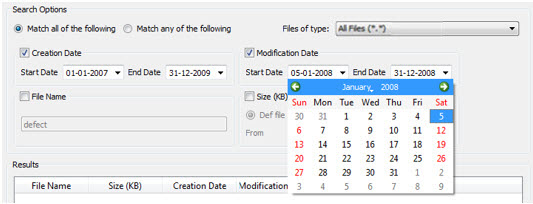

You can set the
search utility to search based on modification date.
Procedure
- In the Search and Open Inspection(s)
dialog box, select the Modification Date check box.
- To set the start and end dates,
for each entry, click the down arrow and a calendar appears. Select
the desired dates as shown in Figure 1.
Figure 1. Modification Date
Option
- Note the following:
The system modification
date (returned by operating system) is used to search the results.
By default, the ending
date is the current date. If the ending date is not entered, all files
with last modification dates between the starting date and the current
date are selected.